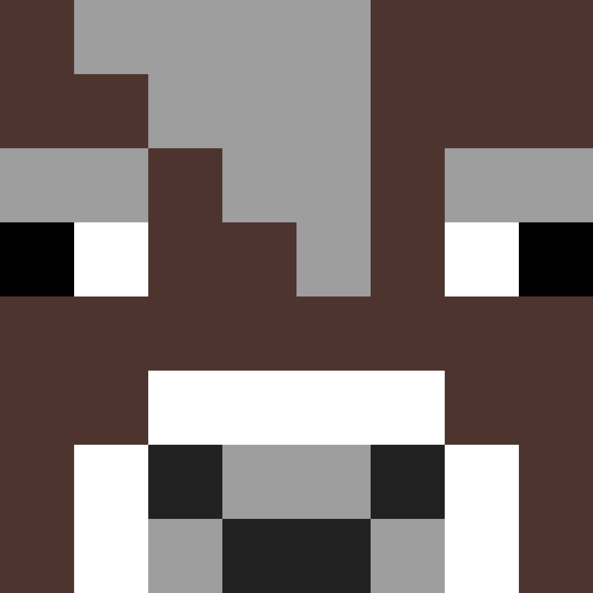
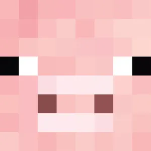
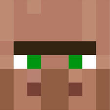
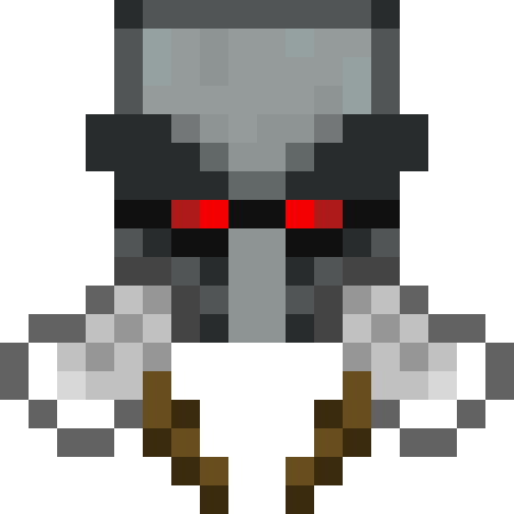
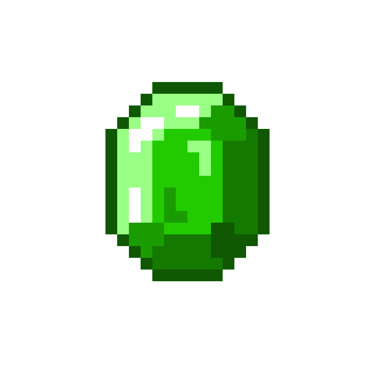
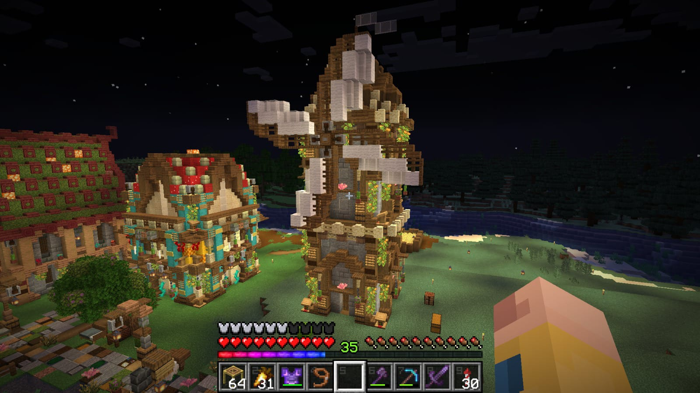
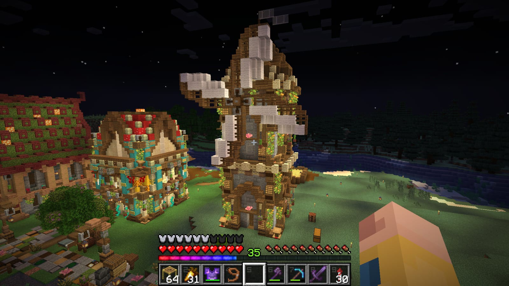

Guia de Mobs e Criaturas
Descubra os detalhes essenciais sobre as criaturas que você encontrará no seu mundo. com as criaturas mais perigosas!
Mobs Hostis (Perigo Constante)
Creeper


Explode ao se aproximar. Mantenha distância ou elimine rapidamente antes que detone.
Drop Principal: Pólvora
Esqueleto


Atira flechas de longe. Procure cobertura ou se aproxime rapidamente com sua espada.
Drop Principal: Ossos, Flechas
Enderman


Se teleporta e pega blocos. Evite contato visual! Lute em áreas baixas - ele não gosta de água!
Drop Principal: Olho do Enderman
Mobs Pacíficos (Seus Aliados)
Vaca 
Fonte de Couro e Leite. Essencial para criação e recursos alimentares.
Item de Criação: Trigo
Porco 
Fonte de Carne de Porco. Excelente alimento para suas aventuras.
Item de Criação: Cenoura, Batata ou Beterraba
Ovelha

Fonte de Lã. Para camas, decorações e banners coloridos.
Item de Criação: Trigo
Habitantes do Mundo
Aldeão 

Mestre das trocas comerciais. Oferece recursos únicos por esmeraldas.
Item de Criação: Pão e Cenoura
Pillager 

Inimigo das vilas. Ataca com besta e pode causar efeito de Má Sorte.
Drop Principal: Besta, Bandeira Ominosa
Vendedor 

Comerciante nômade. Oferece itens exóticos e raros em troca de esmeraldas.
Oferta Especial: Itens exóticos


.jpeg)
.jpeg)
.jpeg)
.jpeg)
 
